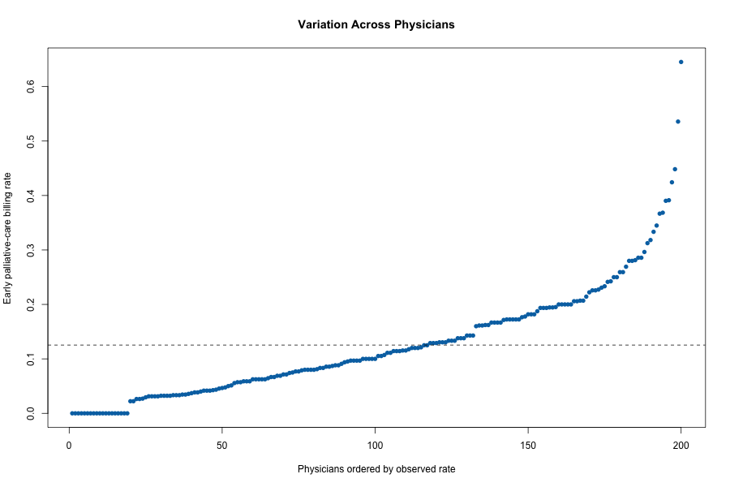

Question: How much adjusted variation in early palliative-care billing is associated with physicians and organizations?
Synthetic hierarchical cohort: 6000 patients, 200 physicians, 40 organizations.
Overall billing rate: 12.5%. Descriptive residual variation reduction: physician FE 10.0%; organization FE 3.1%.

Fixed effects describe variation after measured case-mix adjustment; they do not establish causal provider performance.